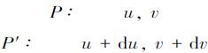
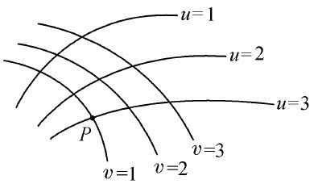
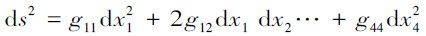
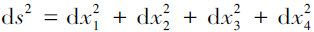

按照高斯的论述，这种把分析方法与几何方法结合起来的处理问题的方式可由下述途径达成。设想我们在桌面上画一个任意曲线系(见图4)。我们把这些曲线称作u 曲线，并用一个数来标明每一根曲线。在图中画出了曲线u =1,u =2和u =3。我们必须设想在曲线u =1和u =2之间画有无限多根曲线，所有这些曲线对应于1和2之间的实数。这样我们就有一个u 曲线系，而且这个“无限稠密”曲线系布满了整个桌面。这些u 曲线必须彼此不相交，并且桌面上的每一点都必须有一根而且仅有一根曲线通过。因此大理石板面上的每一个点都具有一个完全确定的u 值。我们设想以同样的方式在这个石板面上画一个v 曲线系。这些曲线所满足的条件与u 曲线相同，并以相应的方式标以数字，而且它们也同样可以具有任意的形状。因此，桌面上的每一点就有一个u 值和一个v 值。我们把这两个数称为桌面的坐标(高斯坐标)。例如图中的P 点就有高斯坐标u =3,v =1。这样，桌面上相邻两点P 和P′ 就对应于坐标

其中du 和dv 标记很小的数。同样，我们可以用一个很小的数ds 表示P 和P′ 之间的距离(线间隔)，好像用一根小杆测量得出的一样。于是，按照高斯的论述，我们就有
ds 2 =g 11 du 2 +2g 12 du dv +g 22 dv 2
其中g 11 ,g 12 ,g 22 是以完全确定的方式取决于u 和v 的量。量g 11 ,g 12 ，g 22 决定小杆相对于u 曲线和v 曲线的行为，因而也就决定小杆相对于桌面的行为。对于所考虑的面上的诸点相对于量杆构成一个欧几里得连续区的情况，而且只有在这个情况下，我们才能够简单地按下式来画出以及用数字标出u 曲线和v 曲线：
ds 2 =du 2 +dv 2
在这样的条件下，u 曲线和v 曲线就是欧几里得几何学中的直线，并且它们是相互垂直的。在这里，高斯坐标也就成为笛卡尔坐标。显然，高斯坐标只不过是两组数与所考虑的面上的诸点的一种缔合，这种缔合具有这样的性质，即彼此相差很微小的数值各与“空间中”相邻诸点相缔合。

图4
到目前为止，这些论述对于二维连续区是成立的。但是高斯的方法也可以应用到三维、四维或维数更多的连续区。例如，如果假定我们有一个四维连续区，我们就可以用下述方法来表示这个连续区。对于这个连续区的每一个点，我们任意地把四个数x 1 ，x 2 ，x 3 ，x 4 与之相缔合，这四个数就称为“坐标”。相邻的点对应于相邻的坐标值。如果距离ds 与相邻点P 和P′ 相缔合，而且从物理的观点来看这个距离是可以测量的和明确规定了的，那么下述公式成立：

其中g 11 等量的值随连续区中的位置而变。唯有当这个连续区是一个欧几里得连续区时才有可能将坐标x 1 …x 4 与这个连续区的点简单地缔合起来，使得我们有

在这个情况下，与那些适用于我们的三维测量的关系相似的一些关系就能够适用于这个四维连续区。
但是我们在上面提出的表述ds 2 的高斯方法并不是经常可能的。只有当所考虑的连续区的各个足够小的区域被当作是欧几里得连续区时，这种方法才有可能。例如，就大理石桌面和局部温度变化的例子而言，这一点显然是成立的。对于石板的一小部分面积而言，温度在实践上可视为恒量；因而小杆的几何行为差不多能够符合欧几里得几何学的法则。因此，前节所述正方形作图法的缺陷要到这个作图扩展到了占桌面相当大的一部分时才会明显地表现出来。
我们可以对此总结如下： 高斯发明了对一般连续区作数学表述的方法，在表述中下了“大小关系”(邻点间的“距离)的定义。对于一个连续区的每一个点可标以若干个数(高斯坐标)，这个连续区有多少维，就标多少个数。这是这样来做的： 每个点上所标的数只可能有一个意义，并且相邻诸点应该用彼此相差一个无穷小量的数(高斯坐标)来标出。高斯坐标系是笛卡尔坐标系的一个逻辑推广。高斯坐标系也可以适用于非欧几里得连续区，但是只有在下述情况下才可以： 即相对于既定的“大小”或“距离”的定义而言，我们所考虑的连续区的各个小的部分愈小，其表现就愈像一个真正的欧几里得系统。